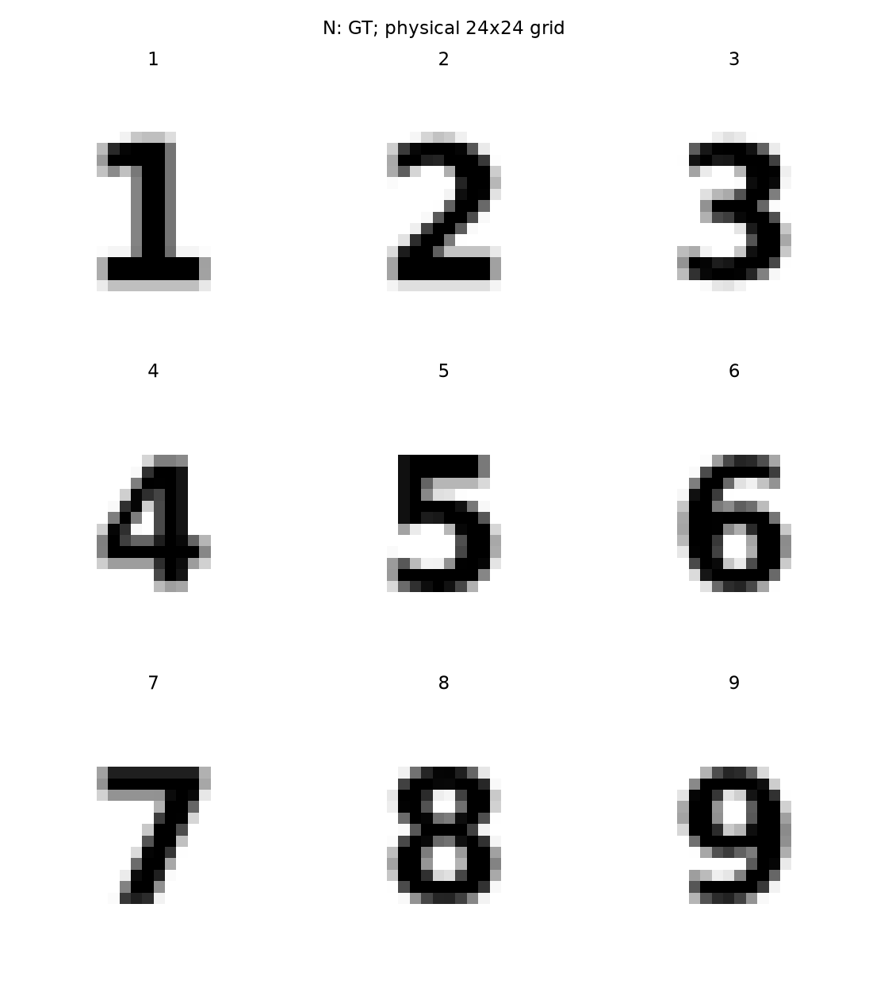
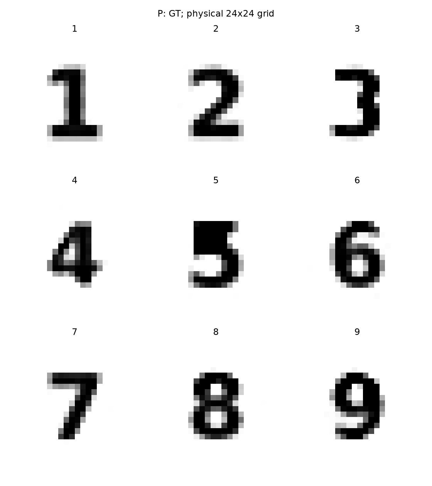
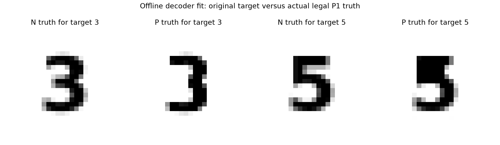

P1 decoder数字表达能力
视觉资格补充：P目标3本次离线构造丢失中横，标为 DECODER_REPRESENTABILITY_FAIL_VISUAL_THIS_FIT。原数值fit门仍PASS，原数据不改；不能将P称为九个清晰数字。见补充说明。
先拟合占比再用decoder输出作为物理truth，不把目标字体当作P真值。门在拟合前固定为ROI occupancyMSE≤0.025且阈值IoU≥0.75。全部九个达到该有限图形门，3与5误差明显较大；有限L-BFGS拟合并未全部满足优化收敛。
| 数字 | P拟合occupancy MSE | 阈值IoU | GT latent范数 | 有限拟合是否收敛 |
|---|---|---|---|---|
| 1 | 0.000803 | 0.9107 | 61.91 | False |
| 2 | 0.000187 | 1.0000 | 53.07 | False |
| 3 | 0.018040 | 0.9322 | 60.35 | False |
| 4 | 0.001602 | 0.9286 | 69.60 | False |
| 5 | 0.017885 | 0.8986 | 47.85 | False |
| 6 | 0.001376 | 1.0000 | 79.32 | False |
| 7 | 0.000256 | 0.9783 | 53.95 | False |
| 8 | 0.001197 | 0.9868 | 74.03 | False |
| 9 | 0.003290 | 0.9692 | 94.48 | False |
范数48–94远高于Gaussian64典型半径约8。合法先验支持不等于高先验概率。P反演仍使用原Gaussianized点目标，低范数平滑解可比高范数truth有更低原目标；不能从P图像模糊推断decoder表达失败，更不能宣称九个典型P1随机parent。


实际GT视觉检查

P3数值门通过而视觉失败；P5有失真但仍可读。不能把本轮构造上限/优化失败等同整个decoder无法表达。全部九个对象不替换。